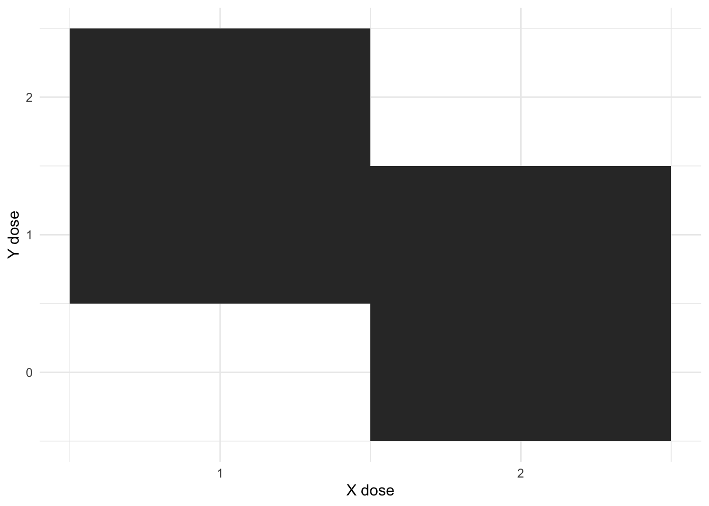
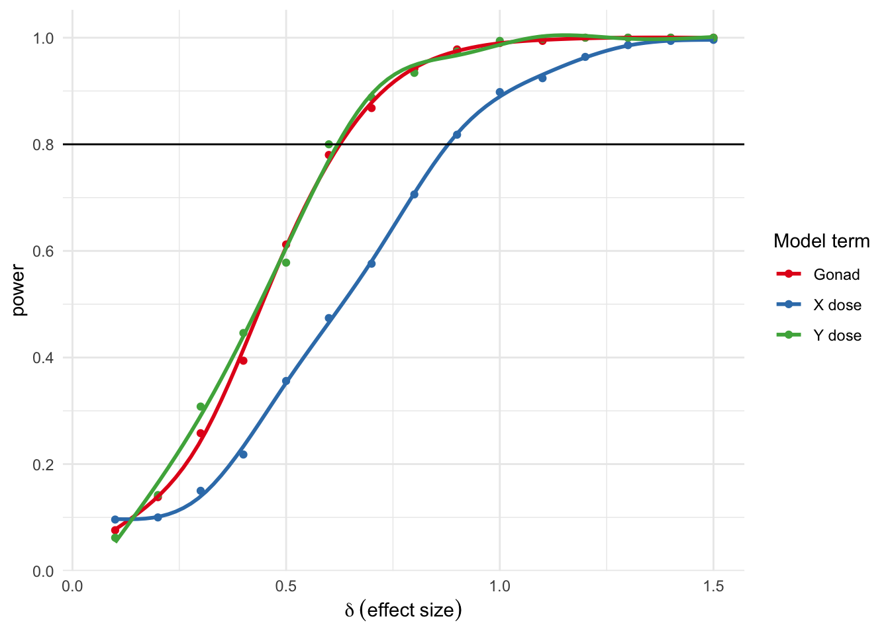

Code
library(tidyverse)
library(ggplot2)
library(broom)
library(splines)This posts originates from a power analysis needed for a grant application. But it brings with it some potentially interesting methods for conducting power analyses in general alongside some discussion of power in non-orthogonal designs.
The power analyses here concern the Sex Chromosome Trisomy (SCT) mouse model, which separates gonadal from chromosomal sex and varies sex chromosome dosage. To do that, the testes forming Sry gene is deleted from the Y chromosome and reinserted onto an autosome, thus allowing one to have XX mice with testes or XY mice with ovaries. In addition, a supernumerary sex chromosome is added, giving one XXY and XYY mice in addition to the XY and XX animals. In the end, there are thus 8 genotypes in the SCT model, as summarized in the table below:
| Shorthand | Gonads | X dose | Y dose |
|---|---|---|---|
| XYM | Testes | 1 | 1 |
| XYF | Ovaries | 1 | 1 |
| XXM | Testes | 2 | 0 |
| XXF | Ovaries | 2 | 0 |
| XXYM | Testes | 2 | 1 |
| XXYF | Ovaries | 2 | 1 |
| XYYM | Testes | 1 | 2 |
| XYYF | Ovaries | 1 | 2 |
There are multiple ways to model this dataset, including testing for effects of 8 genotypes, the effect of aneuploidies, etc. But currently our thinking is that we can model the data as the effect of gonads, X chromosome dose, and Y chromosome dose.
Let’s set up a function that can simulate this data. First, load some libraries
library(tidyverse)
library(ggplot2)
library(broom)
library(splines)For the sake of this post we’ll keep it simple, and not look for any interactions, and assume that the effects (at least as simulated) are uncorrelated. We’ll also look at what some large effect size (5 sd) simulations would look like to give us a sense of the data.
generateSCTData <- function(npergroup=10,
gonadeffectmu=0,
gonadeffectsd=0,
xeffectmu=0,
xeffectsd=0,
yeffectmu=0,
yeffectsd=0,
epsilon=1) {
# generate data from the normal distribution separately for each genotype. Here we just use
# epsilon for randomly distributed noise
groups <- rbind(data.frame(group="XYM", gonad=1,X=1,Y=1, volume=rnorm(npergroup, 0, epsilon)),
data.frame(group="XYF", gonad=0,X=1,Y=1, volume=rnorm(npergroup, 0, epsilon)),
data.frame(group="XXM", gonad=1,X=2,Y=0, volume=rnorm(npergroup, 0, epsilon)),
data.frame(group="XXF", gonad=0,X=2,Y=0, volume=rnorm(npergroup, 0, epsilon)),
data.frame(group="XXYM",gonad=1,X=2,Y=1, volume=rnorm(npergroup, 0, epsilon)),
data.frame(group="XXYF",gonad=0,X=2,Y=1, volume=rnorm(npergroup, 0, epsilon)),
data.frame(group="XYYM",gonad=1,X=1,Y=2, volume=rnorm(npergroup, 0, epsilon)),
data.frame(group="XYYF",gonad=0,X=1,Y=2, volume=rnorm(npergroup, 0, epsilon)))
# and now we add the effects, again normally distributed (only matters if the sd terms are non-zero)
groups$volume <- groups$volume +
rnorm(nrow(groups), gonadeffectmu * groups$gonad, gonadeffectsd) +
rnorm(nrow(groups), xeffectmu * groups$X, xeffectsd) +
rnorm(nrow(groups), yeffectmu * groups$Y, yeffectsd)
# and return the dataset
return(groups %>% mutate(
gonadeffectmu=gonadeffectmu,
xeffectmu=xeffectmu,
yeffectmu=yeffectmu
))
}
# now generate three datasets with large effects
SCTg <- generateSCTData(gonadeffectmu = 5) %>% mutate(sim="Beta gonads = 5")
SCTx <- generateSCTData(xeffectmu = 5) %>% mutate(sim="Beta X = 5")
SCTy <- generateSCTData(yeffectmu = 5) %>% mutate(sim="Beta Y = 5")
rbind(SCTg, SCTx, SCTy) %>%
ggplot() +
aes(x=group, y=volume) +
geom_boxplot() +
facet_grid(.~sim) +
theme_bw() +
theme(axis.text.x = element_text(angle = 45, hjust=1)) 
This makes a few points that come out of the model. Gonads are fully balanced, but chromosome dosage is not. There are two possible levels of X (1 and 2), and three of Y (0, 1, and 2). And there is some correlation between them
generateSCTData(npergroup = 1) %>%
ggplot() +
aes(x=X, y=Y) +
geom_tile() +
xlab("X dose") +
ylab("Y dose") +
scale_x_continuous(breaks = c(1,2)) +
theme_minimal()
The design is not fully orthogonal - you cannot have an X dose of 1 and Y dose of 0, or and X dose of 2, and Y of 2.
What does the SCT model’s non-orthogonal design do to our power? Let’s see - we’ll run a set of simulations. It’ll be relatively straightforward:
for effect sizes ranging from 0 to 1.5 with steps of 0.1
generateSCTSimSeries <- function(nsims=500,
npergroup=10,
gonadeffectmu=0,
xeffectmu=0,
yeffectmu=0,
epsilon=1){
# make sure that effects are all equal
if (length(gonadeffectmu) != length(xeffectmu) |
length(gonadeffectmu) != length(yeffectmu)) {
stop("Effects must be the same length")
}
neffects <- length(gonadeffectmu)
# and now we run the simulations
return(pmap(list(npergroup=rep(npergroup, neffects*nsims),
gonadeffectmu=rep(gonadeffectmu, nsims),
xeffectmu=rep(xeffectmu, nsims),
yeffectmu=rep(yeffectmu, nsims),
epsilon=rep(epsilon, neffects*nsims)),
generateSCTData))
}
modelSCTSimSeries <- function(df) {
#df <- df %>% mutate(X = X-1)
tidy(lm(volume ~ gonad + X + Y, df)) %>% mutate(gonadeffectmu=df$gonadeffectmu[1],
xeffectmu=df$xeffectmu[1],
yeffectmu=df$yeffectmu[1]) %>%
pivot_wider(names_from = term, values_from = estimate:p.value)
}
makePowerSeries <- function() {
effectseries <- seq(0, 1.5, 0.1)
neffects <- length(effectseries)
npergroup=10
nsims=500
Gseries <- generateSCTSimSeries(nsims=nsims, npergroup = npergroup,
xeffect=rep(0, neffects),
yeffectmu = rep(0, neffects),
gonadeffectmu = effectseries) %>%
map_dfr(modelSCTSimSeries) %>% mutate(delta=gonadeffectmu, p=p.value_gonad)
Xseries <- generateSCTSimSeries(nsims=nsims, npergroup = npergroup,
gonadeffect=rep(0, neffects),
yeffectmu = rep(0, neffects),
xeffectmu = effectseries) %>%
map_dfr(modelSCTSimSeries) %>% mutate(delta=xeffectmu, p=p.value_X)
Yseries <- generateSCTSimSeries(nsims=nsims, npergroup = npergroup,
xeffect=rep(0, neffects),
gonadeffectmu = rep(0, neffects),
yeffectmu = effectseries) %>%
map_dfr(modelSCTSimSeries) %>% mutate(delta=yeffectmu, p=p.value_Y)
allseries <- rbind(Gseries, Xseries, Yseries)
return(allseries)
}
fullseries <- makePowerSeries()Let’s see what this looks like:
fullseries %>%
group_by(yeffectmu, xeffectmu, gonadeffectmu) %>%
summarise(power=mean(p<0.05)) %>%
pivot_longer(yeffectmu:gonadeffectmu) %>%
ggplot() +
aes(x=value, y=power, colour=name) +
geom_point() +
geom_smooth(se=F, method="lm", formula=y~ns(x,7)) +
xlab(bquote(delta ~ (effect ~ size))) +
scale_x_continuous(limits=c(0.05, 1.5)) +
scale_color_brewer("Model term", labels=c("Gonad", "X dose", "Y dose"), palette = "Set1") +
geom_hline(yintercept = 0.8) +
scale_y_continuous(breaks = seq(0,1,0.2)) +
theme_minimal()
Here power - the proportion of simulations where p was < 0.05 - is on the y axis, and the simulated effect size on the x axis. So, for example, to get a power of 0.08 you’d need to an effect size of about 0.6 for gonads and Y dose and 0.9 for X dose.
What’s up with the previous results? Why is X dose at a lower power than Y or gonads?
Let’s start with gonads and test whether our simulations make sense. We simulated 10 mice per group, so given that exactly half the mice will be of each gonad type we can assess whether we’d get the same answer with a parametric power test:
power.t.test(n=40, power=0.8)
Two-sample t test power calculation
n = 40
delta = 0.634299
sd = 1
sig.level = 0.05
power = 0.8
alternative = two.sided
NOTE: n is number in *each* groupAnd indeed, the answer is the same - at 40 mice per group and a power of 0.8 you’d recapture an effect size of 0.63.
But you also have 40 mice with one X chromosome and 40 mice with 2 X chromosomes, yet the power is lower than expected. The answer lies in the fact that the two are correlated:
generateSCTData(npergroup = 1) %>% select(gonad, X, Y) %>% cor gonad X Y
gonad 1 0.0000000 0.0000000
X 0 1.0000000 -0.7071068
Y 0 -0.7071068 1.0000000Now go and have a read of this paper from 1991. Estimated errors in linear models are both dependent on the covariance between terms as well as the range of possible values. So X and Y doses are correlated, but Y dose has a greater range, hence the greater power for Y dose than X dose in the SCT model.
So if there is a problem with colinearity why don’t we run a separate model with just or X or Y dose? Let’s try that for a single simulation of an effect size of 2 for X
set.seed(42)
Xsim <- generateSCTData(xeffectmu = 2)And let’s look at the output of our linear model including all terms:
summary(lm(volume ~ gonad + X + Y, Xsim))
Call:
lm(formula = volume ~ gonad + X + Y, data = Xsim)
Residuals:
Min 1Q Median 3Q Max
-2.71496 -0.56202 0.06254 0.65473 2.37194
Coefficients:
Estimate Std. Error t value Pr(>|t|)
(Intercept) -0.01185 0.71272 -0.017 0.9868
gonad 0.40373 0.23757 1.699 0.0933 .
X 1.80717 0.33598 5.379 7.99e-07 ***
Y 0.11938 0.23757 0.503 0.6168
---
Signif. codes: 0 '***' 0.001 '**' 0.01 '*' 0.05 '.' 0.1 ' ' 1
Residual standard error: 1.062 on 76 degrees of freedom
Multiple R-squared: 0.4136, Adjusted R-squared: 0.3905
F-statistic: 17.87 on 3 and 76 DF, p-value: 7.13e-09Looks reasonably good in terms of both effect size and significance for both X and Y. But now let’s just model X.
summary(lm(volume ~ X, Xsim))
Call:
lm(formula = volume ~ X, data = Xsim)
Residuals:
Min 1Q Median 3Q Max
-2.8571 -0.6050 0.1795 0.6668 2.1104
Coefficients:
Estimate Std. Error t value Pr(>|t|)
(Intercept) 0.4885 0.3784 1.291 0.201
X 1.6878 0.2393 7.053 6.25e-10 ***
---
Signif. codes: 0 '***' 0.001 '**' 0.01 '*' 0.05 '.' 0.1 ' ' 1
Residual standard error: 1.07 on 78 degrees of freedom
Multiple R-squared: 0.3894, Adjusted R-squared: 0.3816
F-statistic: 49.74 on 1 and 78 DF, p-value: 6.247e-10The estimate is a bit lower, but still not too far off. But let’s model Y for data where only a change in X was simulated:
summary(lm(volume ~ Y, Xsim))
Call:
lm(formula = volume ~ Y, data = Xsim)
Residuals:
Min 1Q Median 3Q Max
-3.6766 -0.8249 0.2119 0.9249 2.5556
Coefficients:
Estimate Std. Error t value Pr(>|t|)
(Intercept) 3.8044 0.2419 15.73 < 2e-16 ***
Y -0.7842 0.1975 -3.97 0.000159 ***
---
Signif. codes: 0 '***' 0.001 '**' 0.01 '*' 0.05 '.' 0.1 ' ' 1
Residual standard error: 1.249 on 78 degrees of freedom
Multiple R-squared: 0.1681, Adjusted R-squared: 0.1575
F-statistic: 15.76 on 1 and 78 DF, p-value: 0.0001585A woefully incorrect estimate. In the presence of colinearity you need to covary for the other parameters to not get caught in a badly misspecified model.